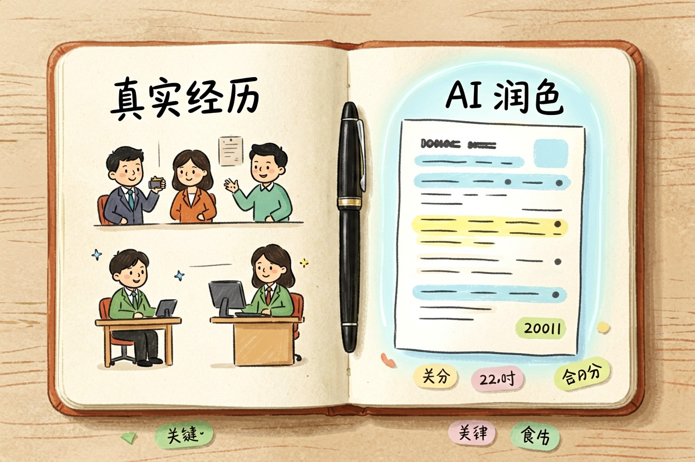
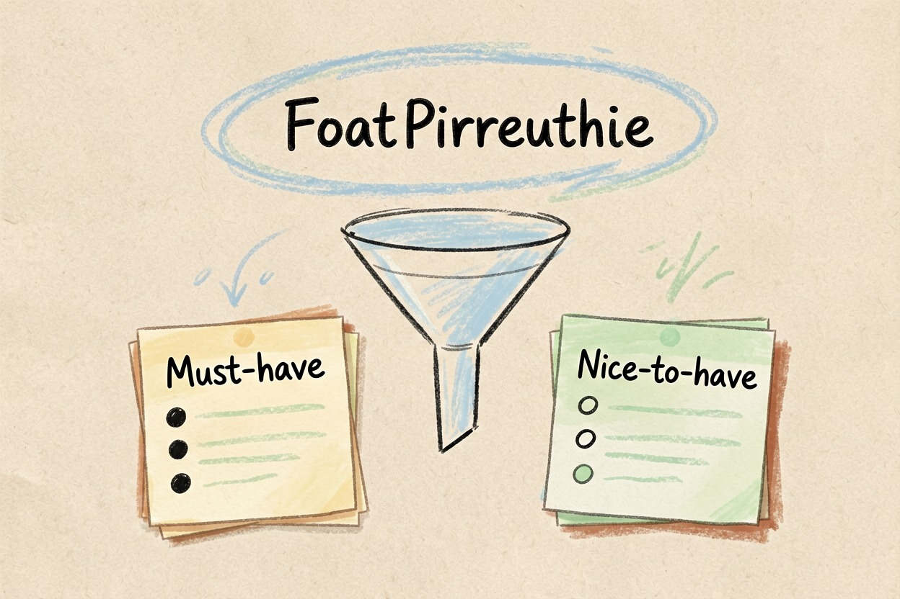
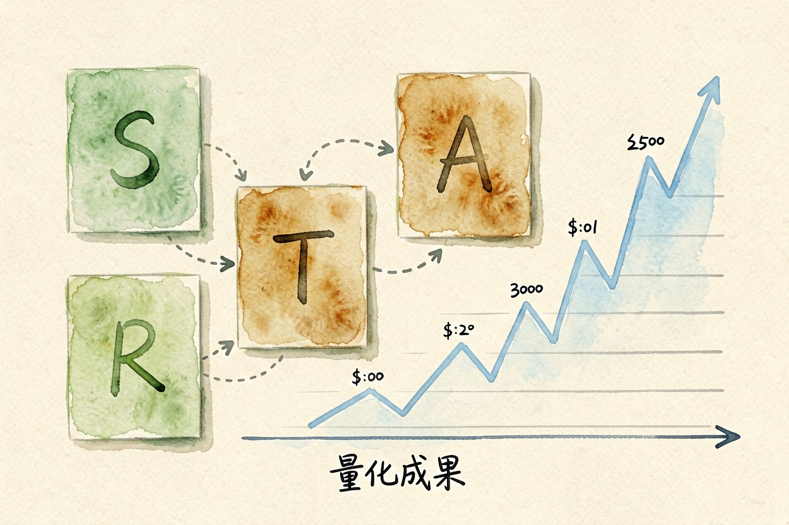
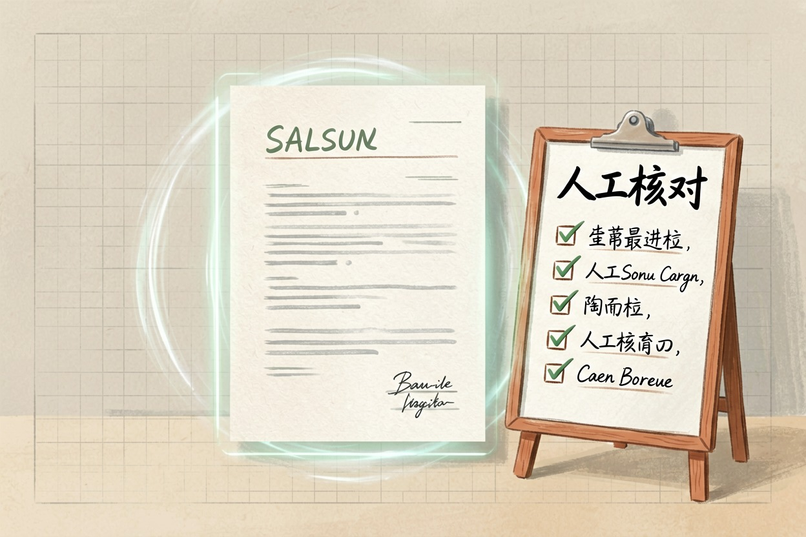
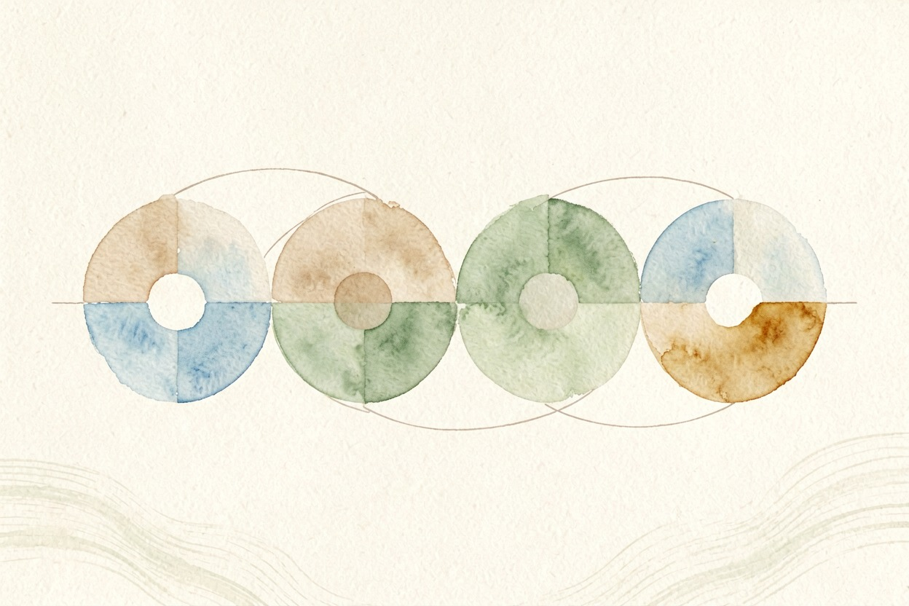

AI 简历优化教程：从 JD 分析到 ATS 通过：2026 版实操指南
简历石沉大海？问题可能在表达。用 AI 优化措辞、匹配关键词，让简历通过 ATS 筛选
HR 平均只花 6 到 8 秒扫描一份简历。没有命中关键词，简历不会进入人工审核。
AI 简历优化的价值——帮你命中关键词、改写流水账、适配 ATS。
关键要点 - AI 是简历助手，不是编造经历的工具，真实经历加 AI 优化才是最佳组合- 从 JD 提取关键词，区分 must-have 和 nice-to-have，自然融入简历- STAR 法则把流水账改写成有数据支撑的成果描述- ATS 系统有格式要求，人工审核清单不可忽视
AI 简历优化核心原则

AI 简历优化的核心原则很简单：真实经历，AI 润色。
很多求职者误把 AI 当作「经历制造机」，让 AI 凭空编造项目经验。面试官很容易识破，一旦被发现，信任崩塌，努力归零。
ATS 系统扫描关键词——技能、工具、行业术语。缺少 JD 中的关键词，就算能力再强，也可能在第一轮被筛掉。
国内招聘平台（BOSS 直聘、智联招聘、猎聘）同样使用关键词筛选。针对这些平台优化简历，命中率会明显提升。
可以参考 AI 简历优化工具，本文侧重实操步骤。
从 JD 提取关键词

拿到心仪岗位的 JD 后，不要急着改简历。先用 AI 分析。
分析这份工作描述，提取以下信息：
1. 核心技能要求（must-have）
2. 加分项技能（nice-to-have）
3. 行业关键词和工具名称
4. 岗位核心职责（用 3 个动词概括）把 JD 全文粘贴进去，让 AI 做结构化提取。
拿到关键词后，检查简历是否覆盖 must-have。缺失的关键词用真实经历补充。比如 JD 要求「Python」，你确实写过 Python 脚本，就明确写出项目名称和用途。
关键词自然融入简历，不要堆砌成段落。ATS 能识别关键词堆砌，反而会降低评分。
用 STAR 法则重写工作经历

STAR 法则是把流水账变成成果描述的标准公式。
Situation（情境）：项目背景是什么
Task（任务）：你负责什么
Action（行动）：你做了什么
Result（结果）：可量化成果把原始简历描述交给 AI 改写：
用 STAR 法则把以下工作经历改写成有数据支撑的成果描述，控制在 50 字以内：
[粘贴原始描述]原始版本：「负责公众号内容运营」改写后：「负责公众号内容运营，月均产出 20 篇图文，粉丝增长 35%」
小张投了 20 多份简历，几乎都石沉大海。她用 STAR 法则把「参与电商活动」改成「参与双 11 大促，GMV 增长 40%」。三周后，收到三家面试邀请。
准备好打磨面试表达了？ 参考 AI 自我介绍写作指南，面试前的自我介绍同样需要用 AI 优化。
ATS 优化与最终检查

ATS 系统对简历格式有明确要求。
格式要求：避免表格、图形、特殊字符和复杂排版。纯文本最安全。PDF 格式优于 Word{:target="_blank"}。
针对岗位定制：不要一份简历投所有岗位。根据 JD 关键词生成定制版本。一份改三版，胜过一份通用简历投三十次。
人工审核清单：检查 AI 是否编造经历，核实所有数字和项目名称，确认语言风格与个人一致，检查拼写和格式。
把简历打印出来，朗读一遍。听起来不像你说的话，就改。这是判断 AI 是否保留了你个人风格的最佳方法。
AI 简历优化的核心逻辑很清晰：先写真实版本，再让 AI 润色。不要让 AI 编造没有的真实经历，编造细节在面试中很容易被识破；不要未经本人审核就直接投递。

本文信息核对于 yes。AI 产品的价格、免费额度与功能变动频繁，实际以各工具官网当前说明为准。